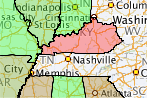
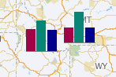
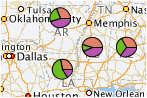
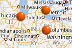

Screen Shot(s)

| Oracle Fusion Middleware Data Visualization Tools Tag Reference for Oracle ADF Faces 12c (12.2.1) E52773-01 |
dvt:map map map
UIComponent class: oracle.adf.view.faces.bi.component.geoMap.UIGeoMap
Component type: oracle.dss.adf.geoMap.GeoMap
The Map component provides the ablity to display different maps and enables high performance panning, zooming and display of different layers (aka Themes) of data. Unlike other ADF Faces component, the Map component itself doesn't take a data model via the 'value' attribute. Instead, it only needs a configuration that contains a URL to a Map Viewerer service and optionally a Geo-Coder service if address data will have to be converted to longitutde and latitude.
Each layer/theme on the Map has its own data model which can be set on the theme via the 'value' attribute. The Map provides a very flexible way to show data from different sources on top of the same base map so it's easy to view different data sets on a single Map component.
The base maps displayed on the Map component include geographic and political features such as rivers and roads. If these features are not required on your maps, then using the <dvt:thematicMap> tag might be better suited for your application. Note, however, that the <dvt:mapToolbar> is only available for use with the <dvt:map> tag.
You can get started quickly by using the Hosted service provided by Oracle or if you have an existing Map Viewer instance with your own base maps you can use that as well.
Quick Links: Hosted Services | Themes | Toolbar | Selections | OverviewMap | Legend | AutoZoom |
To get started, you can use Oracle's hosted eLocation services when you create a configuration for the Map component if you do not have an existing Map Viewer service available. The URLs for theses services are the following:
You should use ELOCATION_MERCATOR.WORLD_MAP for the baseMapName.
You can also choose to use your own Map Viewer & Geocoder instances if they are available. These instances must use Map Viewer version 11 or higher. You should use the name of the map tile's layer on your mapviewer as the baseMapName, which should be in the form of data-source-name.map-tile-layer-name.
To show your data on the map, you need to add themesto your map. Your data should be binded to the value attribute of the themes. Your data should be an instance of oracle.adf.view.faces.bi.model.GeoMapDataModel.
The map supports display of multiple layers of information called themes, which could be one of the following types:
| Theme Types | Description and Example | Sample Image |
|---|---|---|
| Color Theme | The map will color different regions on the map based on the data associated with the region. For example, you can build a US map that color states based on the sales number of each state using the Color Theme |  |
| Bar Graph Theme | The map will draw a bar graph for each of the region in the underlying data. For example, you can build a map that shows a bar chart that shows the sales figure for each state. |  |
| Pie Graph Theme | The map will draw a pie graph for each of the region in the underlying data. |  |
| Point Theme | The map will draw an image, or a HTML tag for each point in the underlying data. |  |
| Predefined Theme | The map will draw a theme that is defined using the Map Admininstrator tool on top of the map. |
To use the map toolbar, you need to add the <dvt:mapToolbar> to your page, and set the mapId attribute to the id of the map. The mapToolbar tag is not a child tag of the map.
The toolbar lets users pan, zoom, marquee zoom on the map, turn themes off and on, make selections on the map, calculate distance and area, display legend, or show the coordinate of the mouse cursor location of the map.
The toolbar lets users make rectangle, circle, polygon or point selections on the map. You can control the color of the selected region through the selectionFillColor, selectionStrokeColor and selectionFillOpacity. You can add your listener code through the selectionListener attribute to work on the selected data.
By default, the map has an overview map. You can set the width, height and visibility of the overview map by the <dvt:mapOverview> tag. The <dvt:mapOverview> tag is a child tag of the map.
The map has a legend which can be displayed by default or launched via the toolbar. You can customize the appearance of the legend by the <dvt:mapLegend> tag.
The map has an autozoom feature that let the map to focus on the data of a theme. To use this feature, you need to set the autoZoomThemeId to the theme that you want the map to focus on. The map supports two autozoom strategies:
<dvt:mapToolbar mapId="map1"/>
<dvt:map startingY="0.0" startingX="0.0" mapZoom="0" mapServerConfigId="mapConfig1" baseMapName="ELOCATION_MERCATOR.WORLD_MAP" inlineStyle="width:100%; height:600px;" id="map1" autoZoomThemeId="mapColorTheme1">
<dvt:mapOverview/>
<dvt:mapColorTheme id="mapColorTheme1" themeName="MAP_STATES_NAME" value="#{geoMapBacking.colorModel}" minColor="#33FF33" maxColor="#FF3333" bucketCount="5"/>
<dvt:mapPieGraphTheme id="mapPieTheme1" themeName="MAP_STATES_NAME" pieRadius="10" locationColumn="POLYGON_NAME" value="#{geoMapBacking.barPieModel}"/>
<dvt:mapPointTheme id="pointTheme" value="#{geoMapBacking.pointModel}"/> </dvt:map>
The inlineStyle attribute can be used to specify a map's width and height. For example, inlineStyle="width:600px;height:400px" or inlineStyle="width:100%;height:400px".
The <dvt:map> tag can have the following children:
| Type | Phases | Description |
|---|---|---|
| oracle.adf.view.faces.bi.event.MapSelectionEvent | Apply Request Values | SelectionEvent will be fired when the user finished defining a selected region on the map, or when the user unselected the region. Users can use the rectangle tool, circle tool, polygon tool, or point tool to select a region, and users can right click on the map to unselect the region |
| org.apache.myfaces.trinidad.event.AttributeChangeEvent | Invoke Application, Apply Request Values |
Event delivered to describe an attribute change. Attribute change events are not delivered for any programmatic change to a property. They are only delivered when a renderer changes a property without the application's specific request. An example of an attribute change event might include the width of a column that supported client-side resizing. |
| Name | Description |
|---|---|
| popup | The popup facet for left click. It usually contains a dialog or a panelWindow. This facet supports only a single child component. |
| rtPopup | The popup facet for right click. It usually contains a menu. This facet supports only a single child component. |
| Name | Type | Supports EL? | Description |
|---|---|---|---|
| attributeChangeListener | javax.el.MethodExpression | Only EL | a method reference to an attribute change listener. Attribute change events are not delivered for any programmatic change to a property. They are only delivered when a renderer changes a property without the application's specific request. An example of an attribute change events might include the width of a column that supported client-side resizing. |
| autoZoomStrategy | String | Yes | Valid Values: MAXZOOM, CENTERATZOOMLEVEL Default Value: MAXZOOM This attribute determines how the map will adjust the center and zoom level. Valid values are:
|
| autoZoomThemeId | String | Yes | Specifies the id of the theme where the map will use to set its center and zoom level when the map starts. If the autoZoomStrategy is MAXZOOM, the map will zoom down to the maximum level where all objects in the theme is visible. If the autoZoomStrategy is CENTERATZOOMLEVEL, the map will center on the theme, and will use the value in the mapZoom attribute as the starting zoom level. |
| baseMapName | String | Yes | Specifies the name of the baseMap for the map. The name is in the form of data-source-name.cache-instance-name. Cache-instance-name specifes the name of the map cache instance, and data-source-name specifies the name of the MapViewer data source. Refer to mapviewer's documentation for detail. |
| binding | String | Only EL | Binding reference to store the UIGeoMap component |
| copyrightText | String | Yes | Specifies the copyright text of the map. |
| customizationId | String | Yes | This attribute is deprecated. The 'id' attribute should be used when applying persistent customizations. This attribute will be removed in the next release. |
| hybridBaseMapName | String | Yes | Specifies the name of the baseMap for the hybrid image map. The name is in the same format as baseMapName. |
| id | String | No | The identifier for the map component |
| inlineStyle | String | Yes | Specifies the inline style of the map's outer DOM element. It can be used to control the size/position, or background color of the map. |
| mapServerConfigId | String | Yes | Specifies the name of the configuration file that contains the URLs for remote map server and geocoded server |
| mapZoom | int | Yes | Default Value: 0 Specifies the beginning zoom level of the map. The zoom levels are defined in the map cache instance as part of the base map. The default zoom level is 0. |
| partialTriggers | String[] | Yes | Specifies the ids of the components that should trigger a partial update. This component will listen on the trigger components. If one of the trigger components receives an event that will cause it to update in some way, this component will request to be updated too. |
| rendered | boolean | Yes | Default Value: true Specifies whether the component is rendered |
| satelliteBaseMapName | String | Yes | Specifies the name of the baseMap for the satellite image map. The name is in the same format as baseMapName. |
| selectionFillColor | String | Yes | Default Value: #49E0F6 Specifies the fill color for the selected region when users make selection on a colorTheme, barGraphTheme and pieGraphTheme, using the rectangle tool, circle tool, polygon tool or point tool on the mapToolbar.. Valid values are RGB hexadecimal. For example, color="#000000" for black. The default value is #49E0F6 |
| selectionListener | oracle.adf.view.faces.bi.event.MapSelectionListener | Yes | A method reference to a selection listener Refers to a backing bean method that takes MapSelectionEvent as an argument The MapSelectionEvent contains the information on the selected region.
public void processSelection(MapSelectionEvent mapSelectionEvent) {
Iterator iterator = mapSelectionEvent.getIterator();
while (iterator.hasNext()) {
DataContent dt = (DataContent)iterator.next();
String selectedLocation = dt.getLocationName();
System.out.println (selectedLocation);
}
}
|
| selectionOpacity | int | Yes | Default Value: 40 Specifies the opacity of the fill color for the selected region when users make selection on a colorTheme, barGraphTheme and pieGraphTheme, using the rectangle tool, circle tool, polygon tool or point tool on the mapToolbar. Valid values are 0 to 100. 0 means 100% transparent, and 100 means no transparency. The default value is 40. |
| selectionStrokeColor | String | Yes | Default Value: #000000 Specifies the stroke color for the selected region when users make selection on a colorTheme, barGraphTheme and pieGraphTheme, using the rectangle tool, circle tool, polygon tool or point tool on the mapToolbar. Valid values are RGB hexadecimal. For example, color="#000000" for black. The default value is #000000 |
| showInfoArea | boolean | Yes | Default Value: true Specifies whether the user can show the information area on the map or not. The default value is true. |
| showScaleBar | boolean | Yes | Default Value: false Specifies whether to show the scale bar on the map or not. The default value is false. |
| srid | int | Yes | Default Value: 8307 Specifies the srid (spatial reference id) of all the coordinates of the map, which includes the center of the map - which defined by starting X and startingY - and all the points in the point theme. Refer to Oracle Spatial documentation for all the valid values and their meaning. The default value is 8307. For mercator projection, the value is 54004. |
| startingX | double | Yes | Default Value: 0.0 Specifies the X coordinate of the center of the map. The srid for the coordinate is specified in the srid attribute. If the srid attribute is not specified, this attribute assumes that its value is the longitude of the center of the map. |
| startingY | double | Yes | Default Value: 0.0 Specifies the Y coordinate of center of the map. The srid for the coordinate is specified in the srid attribute. If the srid attribute is not specified, this attribute assumes that its value is the latitude of the center of the map. |
| styleClass | String | Yes | Sets a CSS style class to use for this component. |
| summary | String | Yes | Sets a summary of this geographical map's purpose and structure for user agents rendering to non-visual media (e.g. screen readers). |
| unit | String | Yes | Valid Values: MILES, METERS Default Value: MILES Specifies the unit of measurement in the information area.
|
| zoomBarPosition | String | Yes | Valid Values: EAST, WEST, NONE Default Value: WEST Specifies the position of the zoomBar in the map. Valid values are:
|